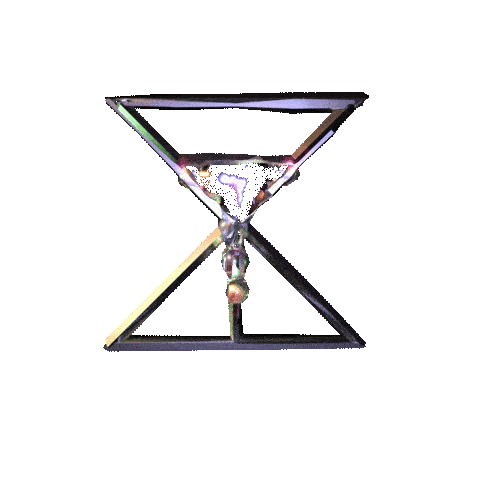

Lapalux reflects on his relationship with music and influences behind ‘Amnioverse’
Matt Mullen
30 January 2020
‘Amnioverse’ is without doubt Howard’s most emotive and personal production, a sensitive and nuanced exploration of a self-created universe that seamlessly brings together two opposing orders of magnitude: the smallness, innocence and vulnerability of the amniotic sac – the safely hidden space from which we all emerge – and the unimaginable scale of the vast and inaccessible universe that surrounds us.
This conceptual parallel is mirrored in sound throughout the record, as the listener is guided through stunningly expansive atmospheres and jagged, destructive beats that echo the scope and power of the cosmos, before finding breathtaking pockets of intimacy and feeling in whispered vocals and softly articulated harmonies that resonate on a deeply emotional level, reminding us that though we may be collectively stranded on an ailing planet within an indifferent universe, we are not alone.

We caught up with Lapalux to discuss artistic influences, production techniques and personal sentiments that lay behind the creation of his latest album, exploring his passion for modular synthesis, the synergy between man and machine, and his therapeutic relationship with production, music and art.
< hover the floating energy pods to view our interview questions >
< click to experience each answer >
Q: Listening through the new record, I can hear further explorations of the sonic palette heard on Ruinism, alongside newer elements that seem like an expansion or development of your sound. Do you see Amnioverse as a continuation of what you created with Ruinism (and your work before that) or a new creative direction?
Q: The press materials for Amnioverse refer to the title as a “portmanteau of the amniotic sac and the universe” and track titles like “The Lux Quadrant”, “Earth” and “Hellix” are reminiscent of themes from science fiction. How do these ideas relate to the album? What does the concept of the Amnioverse mean to you and how did it inspire the record?
Q: You’ve said that James Turrell’s installation Twilight Epiphany was a strong influence on the new album. To me, not only the installation but even its title relates strongly to your sound – there’s a revelatory beauty in there, a grand sense of the sublime that Turrell’s work also evokes. Is that something that you’re aiming for when you create music, to conjure that kind of feeling and mood?
Q: Despite the progression that’s taken place between each of your releases, I’ve always thought that there’s a recognisable tone, a musical personality, identifiable across your entire discography. Is this a natural result of your creative instincts coming into play over time, or have you been consciously striving to achieve a particular sound?
Q: One thing I’ve always loved about your productions is the level of detail that can be heard in each track, particularly in terms of effects and processing. With that in mind, could you give us any insights into your studio set-up? Any particular pieces of gear or software that are central to your workflow?
Q: Another consistent theme across your discography has been your collaborations with female vocalists. Is there something about the female voice that you feel particularly complements your sound? You’ve worked with JFDR across both Ruinism and Amnioverse – how did you two link up?
Q: Your first release came out in 2011, and I’m assuming you’ve been making music for at least a decade now. In what ways do you feel your creative process has developed since you started out? What are the most important lessons you’ve learned as an artist?
Q: What are your plans for the live recreation of Amnioverse? It’s mentioned in the press release that you’re returning with a live-AV show “driven and delivered by a modular gear set-up” – do you feel as if has your approach to live performance will be different on this new tour?